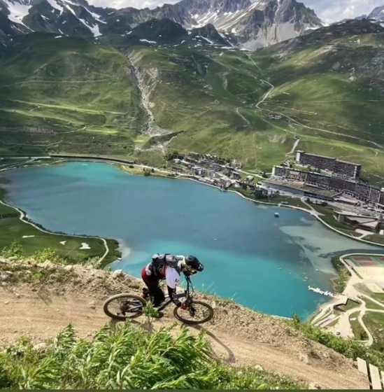
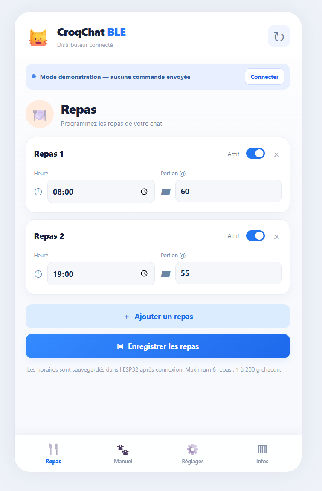
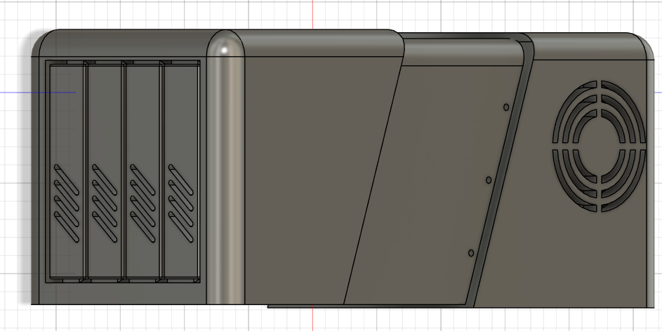
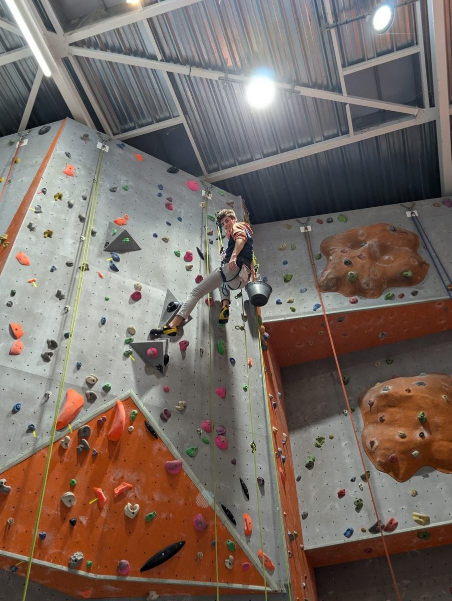

How I work
I like understanding how things work and finding out why they sometimes fail. I try to approach problems by testing one possible cause at a time.
ENGINEERING PORTFOLIO · TOULOUSE, FRANCE
Electrical Engineering Student
Work-study apprentice · Ascent Integration
I study electrical engineering at Toulouse INP–ENSEEIHT and work as an automation apprentice at Ascent Integration. I learned measurement and testing during my first apprenticeship. Today, I use these skills to work on PLCs, HMI screens and industrial machines.
My goal: to build strong skills in automation and become a project manager in the aerospace industry.
Explore my experience →01 / ABOUT ME
My studies in Physical Measurements taught me how to test ideas and understand results. At ENSEEIHT and Ascent Integration, I now use these skills in electrical engineering and automation.
I like understanding how things work and finding out why they sometimes fail. I try to approach problems by testing one possible cause at a time.
I want to develop strong technical skills before gradually taking on more responsibility in industrial automation projects.
I support Gr’INP as a climbing instructor and treasurer and contribute to student life through CAN 7.
BEYOND ENGINEERING
Climbing has been part of my life for years. I also enjoy mountaineering, ice climbing and mountain biking. They give me opportunities to keep learning, challenge myself and spend time outdoors.



02 / PROFESSIONAL EXPERIENCE
I started in a research lab at ALTEO. Today, I work on industrial automation at Ascent Integration. Both experiences taught me to test my ideas and work with others.
I work on automation systems for industrial equipment used in the aerospace sector. My tasks include PLC programming, HMI development, working with motor drives and helping with testing and commissioning.
During my BUT in Physical Measurements, I investigated the rheological properties of alumina powders in an industrial research laboratory.
03 / ENGINEERING PROJECTS
I enjoy projects that combine electronics, programming and mechanical design. They help me learn new skills and solve real problems.

PERSONAL PROJECT · EMBEDDED SYSTEMS & CAD
I am developing a connected cat food dispenser combining an ESP32, RFID identification, a motor, a weighing system and a custom housing designed in Fusion.
Structuring the program into function blocks (FBs) was particularly challenging. When something did not work, we had to rethink our code, find the real problem and solve it.
I improved my structured programming, problem-solving and CAD skills. I also learned how to fit electronic parts into a mechanical design.
ESP32 · RFID · Function blocks · Fusion CAD · Electronics integration
APPLICATION · USER INTERFACE
I created a companion application to make the dispenser easy to use. It allows users to plan meals, set feeding times and portions, enable or disable schedules and access manual feeding controls.
Making the controls simple and easy to understand. I wanted users to set up a meal in just a few steps.
This project helped me design a clearer and more user-friendly interface. This links to the HMI screens I make at Ascent Integration. Both need clear information and simple controls.
CroqChat BLE · Meal scheduling · Interface design · User experience

ASCENT INTEGRATION · COMMISSIONING
I joined an on-site commissioning team for an industrial access system associated with Airbus A350 production.
Working on a real installation rather than a test bench, with the need to communicate clearly and respond to unexpected issues.
First-hand experience of commissioning, greater confidence on site and a better understanding of how engineering work is delivered.
ASCENT INTEGRATION · HMI
I work on Siemens HMI screens and reusable interface components linked to PLC applications.
Making information clear for operators while keeping the application consistent and maintainable.
More confidence in TIA Portal and a better understanding of how interface design affects daily operations.
ELECTRICAL ENGINEERING
Through coursework and industrial work, I study electrical machines, power converters and Siemens S210 and G120C drives.
Connecting mathematical models and control concepts to measurements and actual motor behaviour.
A more systematic approach to testing and a stronger understanding of electrical-machine control.
ALTEO R&D · EXPERIMENTAL RESEARCH
I carried out laboratory measurements and investigated rheological behaviour during my apprenticeship at ALTEO R&D.
Identifying which parameters affected the results and designing meaningful experiments.
Rigour in measurement, data interpretation and technical reporting that I still use today.

PERSONAL PROJECT · RASPBERRY PI
I built a home server using a Raspberry Pi. I use it to manage my smart home and store my files on my own private drive.
I wanted one small system that could run several services and leave room for more storage. It can support up to four hard drives, and I plan to use RAID to help keep files available if one drive fails.
I learned how to set up a Linux server, work with a local network and manage storage and home services.
Raspberry Pi · Linux · NAS · Networking · RAID planning
SELF-HOSTING · HOME AUTOMATION
The Raspberry Pi brings together two things I use at home: a personal drive for my files and a system that controls my home automation.
I wanted more control over my files and home services, without depending on a separate device for everything.
I became more comfortable setting up services, finding network problems and keeping a system running on my own.
Home automation · Personal cloud · Self-hosting
04 / CIVIC ENGAGEMENT
I enjoy helping with student clubs and taking part in campus life.
GR’INP · CLIMBING
I first trained as a climbing instructor to help other students enjoy climbing. Later, I became the club's treasurer to take on more responsibility.
I help run climbing sessions and manage membership fees and the club's finances.
What I learned: a club works well when people can count on each other.

CAN 7 · STUDENT EVENTS
I also take part in CAN 7, the school's student events club. I help support events such as student concerts.
What I enjoy: meeting new people and taking part in school life outside my classes.

05 / SKILLS
I learned these skills at school, in the lab and during my apprenticeships. I use many of them in real projects.
Siemens TIA Portal · SCL and LAD · ET200SP PLCs · HMI development · Profinet · Industrial troubleshooting
Electrical machines · Power electronics · Motor drives · Instrumentation · Feedback control
C/C++ · Python · Microcontrollers · ESP32 · RFID · Sensors and measurement chains
Testing and validation · Design of experiments · Technical documentation · V-model principles · Teamwork
06 / CAREER & EVOLUTION PLAN
I want to become a good automation engineer before managing projects. Understanding the technical work is important to me.
My first apprenticeship taught me to be methodical, work with measurements and explain technical results.
I am developing my PLC and HMI skills, taking part in testing and commissioning, and learning how a project moves from requirements to a working installation.
A semester in Montréal would let me study control systems from another perspective, practise English and learn to adapt to a new environment.
I would like to contribute to more complex automation projects before gradually moving into coordination and project management in aerospace.
CAM ASSESSMENT
See the poster, the five-slide presentation, and my CV and cover letter in French and English.
07 / INTERNATIONAL MOBILITY
For my S9 exchange, my first choice is Concordia University. I want to focus on advanced automatic control and electrical machines, combining the theory behind control systems with practical applications in industry.
My apprenticeship at Ascent Integration has given me hands-on experience with Siemens PLCs, HMI development, motor drives and commissioning. I now want to explore these subjects at master’s level, particularly real-time control, discrete-event systems and the control of electric drives. Studying abroad would also help me work more confidently in English and develop greater independence.
My preferred course selection combines advanced control with electrical-machine modelling and motor-drive control.
A practical programme combining advanced control techniques and electric drives.
An option focused on advanced digital and industrial process control.
MY MOBILITY PROJECT · FR / EN
These documents explain how the courses I have chosen fit my current apprenticeship and my plans to work in aerospace automation.
My motivations for studying at Concordia and how this semester would complement my professional and personal experience.
The specific graduate courses I want to follow in control engineering and electrical machines.
08 / CONTACT
Feel free to contact me about engineering, automation or a project.
For professional enquiries, projects or opportunities.
roch.berquieres@etu.toulouse-inp.fr Write an emailSee my background, professional experience and updates.
Roch Berquieres · LinkedIn View my profile09 / CURRICULUM VITAE
You can view or download my CV in French or English.
Formation en génie électrique, expériences chez Ascent Integration et ALTEO R&D et compétences techniques.
Ouvrir / Télécharger le CV français ↗My education, work-study experience in automation and electrical engineering skills.
Open / Download English résumé ↗